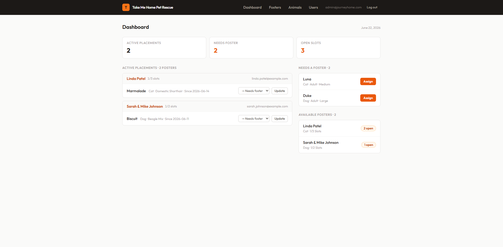

Foster-based animal rescues
Journey Home
01Small rescues have no single source of truth for who’s available to foster right now, or where each animal is. Coordinators run it across group texts and spreadsheets, and things fall through.
I built a placement dashboard: a foster roster, an animal roster, and capacity enforcement, with one live view of who has which animal and who’s free. When a foster hits capacity, new placements are blocked automatically, so the system can’t be over-committed by accident.

Demo login
—
admin@journeyhome.com
/
JourneyHome!
PHP · CodeIgniter 4 · MySQL · Tailwind CSS